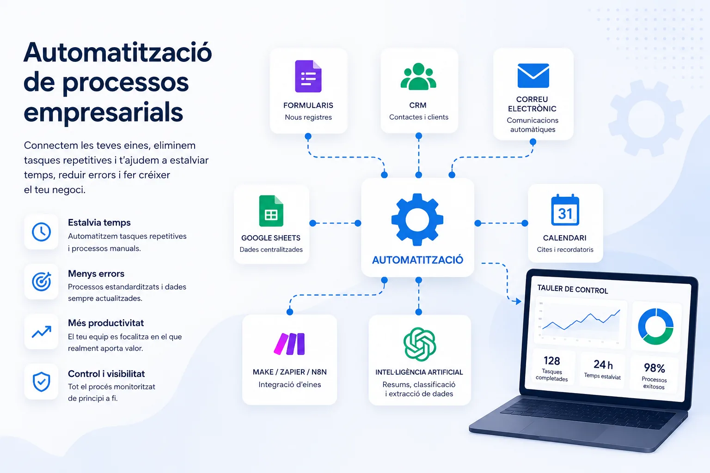

Massa treball manual
Hi ha formularis que es revisen a mà i dades que es copien entre eines. També hi ha correus repetitius, informes manuals i seguiments que depenen de la memòria de l'equip.
Servei d'automatització empresarial
A Nexautia ajudem empreses i pimes a automatitzar tasques repetitives i processos del dia a dia. Treballem a Mataró, el Maresme i Barcelona, connectant eines digitals i integrant intel·ligència artificial. L'objectiu és estalviar temps, reduir errors i treballar amb més control.

Hi ha formularis que es revisen a mà i dades que es copien entre eines. També hi ha correus repetitius, informes manuals i seguiments que depenen de la memòria de l'equip.
Moltes empreses utilitzen CRM, correu, fulls de càlcul, formularis, calendaris o plataformes de facturació. El problema és que cada sistema funciona per separat.
La intel·ligència artificial pot aportar molt valor. Però només té sentit quan s'integra en tasques i processos concrets del negoci.
Automatització de formularis, avisos interns, registre de contactes, respostes automàtiques i seguiment inicial d'oportunitats comercials.
Ideal per no perdre clients potencialsCreació de reportes automàtics amb dades de diferents fonts per evitar copiar i enganxar informació cada setmana o cada mes.
Més control i menys treball manualSeqüències de correu, confirmacions, recordatoris, avisos interns i comunicacions personalitzades segons l'estat de cada procés.
Resposta més ràpida i professionalAutomatització de registres, classificació de sol·licituds, actualització de documents, organització de dades i notificacions internes.
Menys errors repetitiusConnexió entre formularis, correu, fulls de càlcul o bases de dades per actualitzar estats, crear tasques i fer seguiment comercial.
Millor seguiment d'oportunitatsIntegrem IA per resumir textos, classificar missatges i redactar esborranys. També pot extreure informació o generar informes inicials.
IA aplicada a tasques concretesUna automatització pot connectar eines, dades i regles per reduir treball manual. Es pot aplicar a tasques d'oficina, vendes, atenció al client, administració o seguiment intern. Aquests són alguns exemples habituals en empreses i pimes.
| Àrea o procés | Exemple pràctic |
|---|---|
| Captació de leads | Formulari → CRM → avís a l'equip → email de confirmació |
| CRM i vendes | Nou contacte → tasca comercial → recordatori de seguiment |
| Email i comunicacions | Canvi d'estat → missatge personalitzat → registre de l'enviament |
| Administració | Sol·licitud → validació → actualització de dades → notificació |
| Facturació i documentació | Comanda o formulari → dades administratives → arxiu → avís |
| Informes i dashboards | Diverses fonts → actualització de dades → dashboard o informe |
| Agenda i cites | Nova cita → confirmació → recordatori → avís intern |
| Atenció al client | Consulta → classificació → resposta inicial o assignació |
| Processos amb IA | Document o email → anàlisi amb IA → revisió o acció automàtica |
| Connexió entre aplicacions | CRM ↔ correu ↔ fulls de càlcul ↔ calendari |
Sempre que sigui possible, treballem amb les eines que ja utilitza la teva empresa. Per exemple: correu, formularis, CRM, Google Sheets, Airtable, calendaris, Make, Zapier, n8n o altres plataformes.
Comencem amb automatitzacions concretes. Després deixem una base preparada per afegir noves automatitzacions quan la teva empresa ho necessiti.
Automatitzar no sempre és la millor opció. D'una banda, hi ha processos que necessiten supervisió humana. D'altra banda, quan una tasca és repetitiva, freqüent i mesurable, prioritzem solucions amb impacte directe. Busquem estalviar temps, reduir errors, millorar el seguiment comercial o donar un millor servei.
Revisem quines tasques es repeteixen, quines eines utilitzes i on es perd més temps.
Detectem quines automatitzacions poden aportar més valor des del principi.
Definim què activa l'automatització, quines condicions ha de complir i quin resultat ha de generar.
Construïm l'automatització, la provem amb casos reals i n'ajustem el funcionament.
La IA pot ajudar a resumir sol·licituds i classificar missatges. També pot detectar prioritats i preparar informació per a revisió humana.
Pots generar respostes inicials, textos comercials, emails de seguiment o missatges interns que després el teu equip revisa.
La IA pot ajudar a localitzar informació rellevant dins de formularis, documents, emails o sol·licituds de clients.
No es tracta d'automatitzar per automatitzar. Apliquem tecnologia allà on aporta un benefici real. I mantenim supervisió i control quan són necessaris.
És la creació de sistemes que executen tasques repetitives de manera automàtica connectant eines, dades i regles de negoci.
Sí. Moltes pimes se'n poden beneficiar especialment perquè tenen equips reduïts i massa tasques manuals acumulades.
No sempre. En molts casos es poden connectar les eines que ja utilitzes i automatitzar processos sense refer tota l'empresa.
Sí. La IA pot ajudar a resumir, classificar, redactar, extreure informació i donar suport a processos interns o comercials.
L'ideal és començar per una tasca repetitiva, freqüent i fàcil de mesurar: leads, informes, emails, avisos interns o actualització de dades.
No. Una bona automatització ha d'augmentar el control, perquè permet definir regles, avisos, registres i punts de supervisió.
Sí. Treballem amb empreses i pimes de Mataró, el Maresme i Barcelona, i també podem desenvolupar projectes d'automatització de manera online.
Podem revisar la teva situació actual i proposar-te una primera automatització realista. La idea és començar a estalviar temps sense complicar el teu negoci.